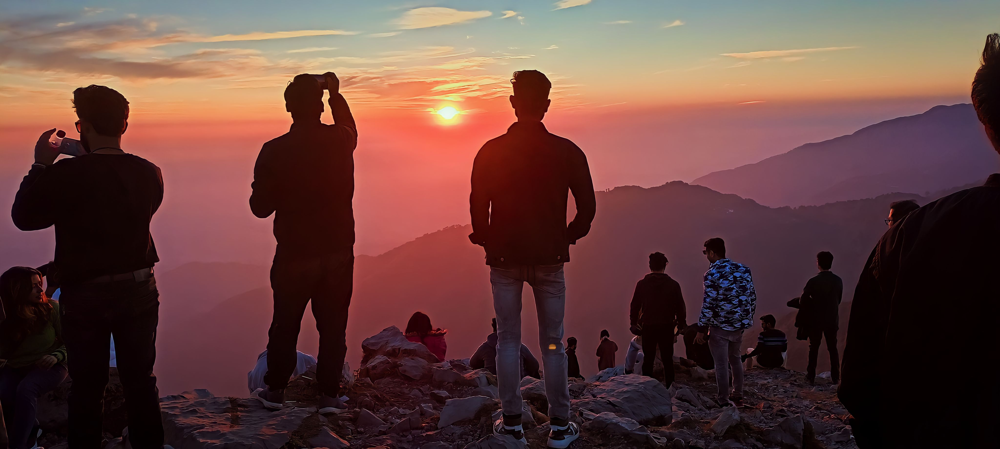

Nature Sunrise
Mussoorie Mountain
Mussoorie, also known as Queen of the Hills, is among the most popular hill stations of the country. A Britisher, Captain Frederick Young, accompanied by an official named FJ Shore, had climbed up the hill from the Doon valley in 1827 and found this ridge offering great views and a salubrious climate. This visit laid the foundation for this grand hill station.